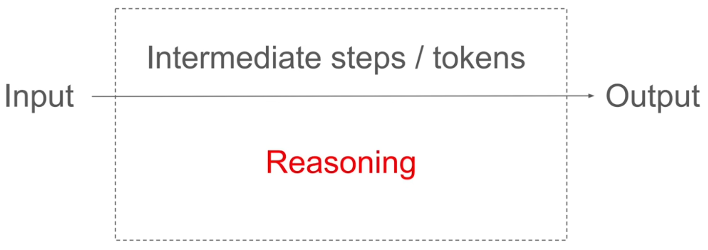
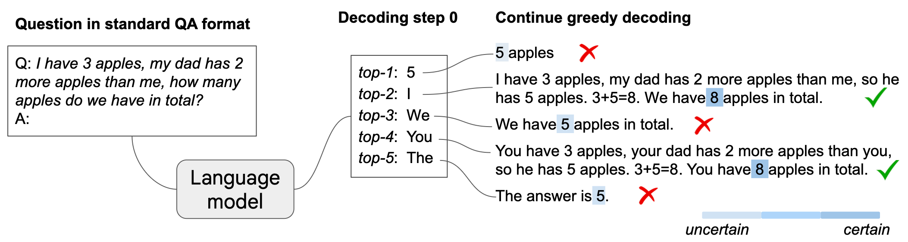
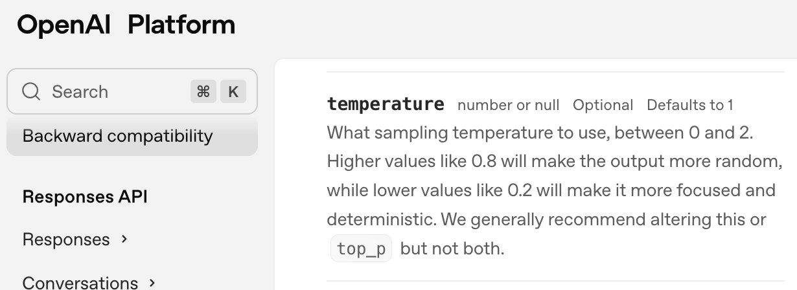

模型的推理能力 / Why Can Models Reason?
Table of Contents

1. 模型為何有推理能力？
至此為止，我們應該有了一個基本的概念：AI模型的一切產出均是基於訓練資料的統計關係，也就是基於機率分佈來進行預測與生成的。我們似乎也能由數學的角度來理解這些模型的運作原理。
但OpenAI於2025年8月份推出了GPT-5以及GPT-5-thinking模型，這兩個模型聲稱具備「推理」能力，能夠解決一些需要邏輯推理的問題，例如數學題、邏輯謎題等。事實上，早在2023年9月份OpenAI推出的o1(OpenAI Reasoning Engine)就標榜了「能夠在答案背後進行推理、並生成中間思考步驟」，它和 GPT-4、GPT-3.5 最大的不同，在於設計上加入了「深度推理」的機制。
為什麼一個只是基於機率分佈的模型能夠進行推理？
2. 如何訓練出一個有推理能力的模型？
首先，語言模型的確是「下一個 token 機率分佈」的取樣器，數學上並沒有「邏輯引擎」。但我們日常所說的話、所寫的文字其實都包含了大量的推理鏈 (reasoning chains) 與邏輯模式（這裡不包括一些言不及義的廢話）。模型就透過訓練，學會了「哪些上下文常常導出哪些結論」。例如數學題、程式碼、辯論文字這些資料中的*規律*其實就是推理步驟的樣本。
當模型內部層數夠深、參數夠多時，它就不只能「模仿字串」，而是能捕捉抽象規律並在生成時重組，模型所表玩出的外在行為就是「能推理」的表象。換句話說：推理不是模型「天生的演算法」，而是從大量資料中學會了模仿與壓縮推理模式。
所以，真正讓模型具備推理能力的關鍵在於
- 架構調整：像 OpenAI 的 o1 / o3 / GPT-5-thinking，會讓模型在內部「思考多步」再輸出答案（類似 chain-of-thought）。
- 訓練方式：給模型更多「逐步解題」的數據，或使用 RLHF 讓它傾向於展現推理過程。
- 解碼策略：例如 Tree-of-Thought、Self-consistency sampling，都是在輸出階段加強推理品質的技巧。
3. 一般（非推理）的模型就沒有推理能力嗎？
在 GPT-3 剛出來的時候，研究者發現：
- 如果直接問它數學題或邏輯題 → 答得很差。
- 但是，如果在 prompt 裡先示範「逐步推理」的範例，它就能照著模仿，表現大幅提升（這就是 few-shot CoT prompting）。
這裡的CoT指的是「Chain of Thought」，也就是「思考鏈」的意思。這種方法讓模型在生成答案前，先模擬人類的思考過程，逐步推導出結論。CoT 就是讓模型在給出最終答案之前，先生成一連串「中間推理步驟」。
在沒有CoT的狀況下，如果我們直接問模型一個問題，它可能會直接給出如下答案
Q: 我有 3 顆蘋果，爸爸比我多 2 顆，我們共有幾顆？
A: 5
但如果我們使用 CoT，讓模型先思考過程，它可能會這樣回答：
Q: 我有 3 顆蘋果，爸爸比我多 2 顆，我們共有幾顆？
A: 我有 3 顆，爸爸有 3+2=5 顆，3+5=8 → 總共有 8 顆。
上面答案中「先算爸爸幾顆，再相加」的過程，就是 CoT。也就是說，如果我們在問模型問題時，在 prompt 裡告訴模型「請逐步思考」或給它範例，讓它自動展開思維鏈，模型就能模仿「逐步解題」的格式，進而提升提升答案的正確性。
如此看來，「模型本身沒有推理能力，只是會模仿文字模式。」這樣的描述是不是過於保守？如果模型沒有推理能力，那prompt再如何引導也沒有用吧？你怎麼能引導出不存在的能力？有沒有可能是「模型本身就具備了某種推理能力，但需要透過適當的提示來激發」？
4. Chain-of-Thought Reasoning Without Prompting
Xuezhi Wang與Danny Zhou在2024年提出了一篇有趣的論文《Chain-of-Thought Reasoning Without Prompting》1，在這篇論文中，作者挑戰了「CoT 只是模仿」的觀點，並提出了「模型本身就具備推理能力」的證據。
Our findings reveal that, intriguingly, CoT reasoning paths can be elicited from pre-trained LLMs by simply altering the decoding process.
這篇論文對於「推理」的定義為：模型在輸入（問題）和最終輸出（答案）之間生成的所有中間步驟。

Figure 1: LLM的推理
為了驗證這個觀點，作者設計了一個實驗：

Figure 2: CoT-decoding：傳統LLM已具備推理能力
在這個實驗中，模型看到了「3 apples」、「2 more apples」、「in total」這些關鍵詞，然後就依據Greedy Decoding策略（輸出可能性最高的生成內容）生成了「5」為第一個輸出，再輸出 apples」結束。但如果我們分析模型在第一次生成時的機率分佈，會發現除了「5」，模型還有可能會出現「I」、「We」、「You」、「The」。
當我們進一步將前五個可能的輸出依序生成答案，就會發現其實正確答案已經隱含在模型的其他生成可能中：
- I have 3 apples, my dad has 2 more apples than me, so he has 5 apples. 3+5=8
- We have 8 apples in total.
- You have 3 apples, your dad has 2 more apples than you, so he has 5 apples. 3+5=8
- The answer is 5.
由這個實驗看來，正確的答案其實原本就存在於模型之中，只是他像省道旁的縣道，如果你只沿著省道走（Greedy decoding），自然看不到縣道盡頭的風景。而模型預設的貪婪解碼策略就像是沿著主幹道走，永遠選擇機率最高的路徑，這樣就錯過了其他可能的路徑。
除了Greedy decoding，模型其實還有其他解碼策略，例如
- Temperature sampling: 透過調整溫度參數，讓模型在生成時更具多樣性，避免總是選擇機率最高的詞語。
- Top-k sampling: 限制模型只能從機率最高的 k 個詞語中選擇，增加生成的多樣性，也許第二高、甚至第五高也可能出現。。
- Nucleus (top-p) sampling: 根據累積機率選擇詞語，在累積機率到 p（例如 0.9）之內的候選集中抽樣確保生成內容的多樣性和合理性。
- Beam search: 同時探索多條生成路徑，選擇最有可能的答案。
5. 生成的溫度
將來大家在建立生成模型時，大概都會遇到這樣一個參數：Temperature（ 模型還有溫度？會發燒嗎 ）
Figure 3: Google AI Studio的溫度設定
Temperature 參數控制了模型生成內容的隨機性與多樣性。溫度越高，生成的內容越多樣化，但也可能越不合理；溫度越低，生成的內容越保守，但也可能越重複。具體來說：
- 低 temperature (≈0–0.3)：輸出更接近最高機率的 token，結果穩定但缺乏多樣性。
- 高 temperature (≈0.8–1.2)：更多隨機性，有創意但也更可能胡亂。
從推理的角度來看，溫度不會直接「賦予推理能力」，因為推理模式存在於模型的權重與訓練。但若 temperature 太低，則會偏向「最可能的套路」，雖然有時能提升數學/邏輯題的正確率，但是從這個例子來看，也有可能因為略過了中間步驟而導致錯誤答案。
Open AI 的ChatGPT預設溫度為12。

Figure 4: OpenAI對temperature的定義及預設值
Footnotes:
Xeuzhi Wang, Denny Zhou, 2024, https://arxiv.org/abs/2402.10200